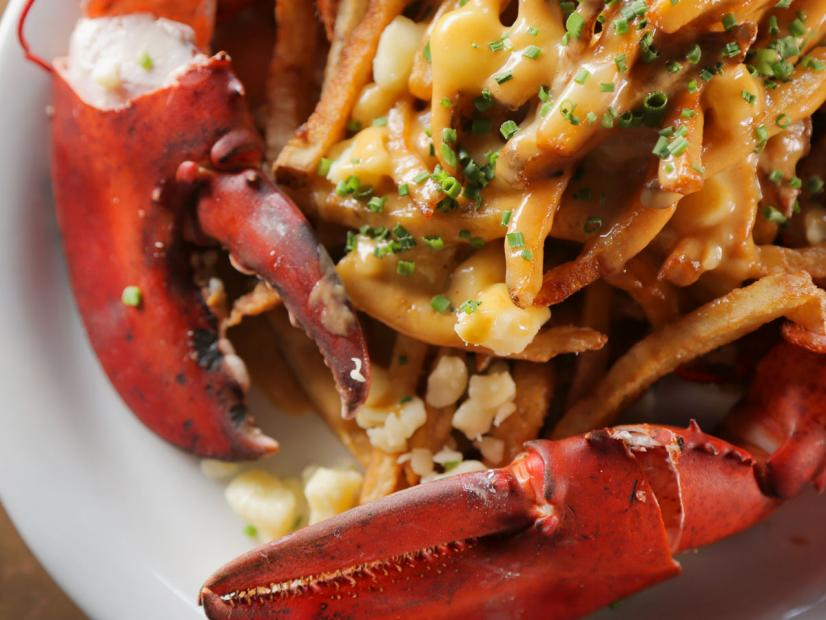

Lobster Poutine

This recipe is perfect if you want to have the lux of
lobster but are too poor to fill your plate with sea spiders
Ingredients
-
2 cups chopped onion
-
1 cup chopped red pepper
-
1 cup chopped carrot
-
1/2 pound (2 sticks) butter
-
1 teaspoon minced garlic
-
2 teaspoons salt, or more to taste
-
1 teaspoon cayenne pepper
-
1/2 teaspoon ground white pepper
-
1 cup all-purpose flour
1/8 cup Jagermeister
-
1/8 cup brandy
-
2 liters lobster stock
-
1/2 cup heavy cream
Directions
-
For the gravy: Sautee the onion, pepper and carrot in the butter in a saucepan until slightly
caramelized. Add the garlic, salt, cayenne and white pepper and cook for 3 more minutes.
Add flour and mix well, cooking for a few more minutes. Add Jagermeister and brandy and reduce slightly.
Add lobster stock and bring to a boil. Cook at a gentle simmer for 20 minutes. Add cream and cook for
an additional 15 minutes at a gentle simmer. Blend in batches and season to taste with salt and pepper.
Set aside until needed.
-
For the poutine: Cook the lobster in a steamer, 11 minutes, or place lobster into salted boiling water
and cook for 12 minutes once water returns to a boil. Meanwhile, cook your fries until crispy
(we recommended cooking them twice in a fryer and allowing them to cool completely between cookings).
Season fries with salt and pepper.
-
Heat up the lobster gravy. (It is essential that the gravy is very hot so it melts the cheese curds.)
-
Cut the lobster in half and remove the tamale (green stuff), then crack the claws and place on a large
platter cut-side up with a gap in the middle. Pile up the hot, seasoned and crispy fries in the gap
between the two lobster halves. Load on a generous serving of cheese curds and ladle on some steaming
hot lobster gravy. Garnish with finely chopped chives. Serve immediately.